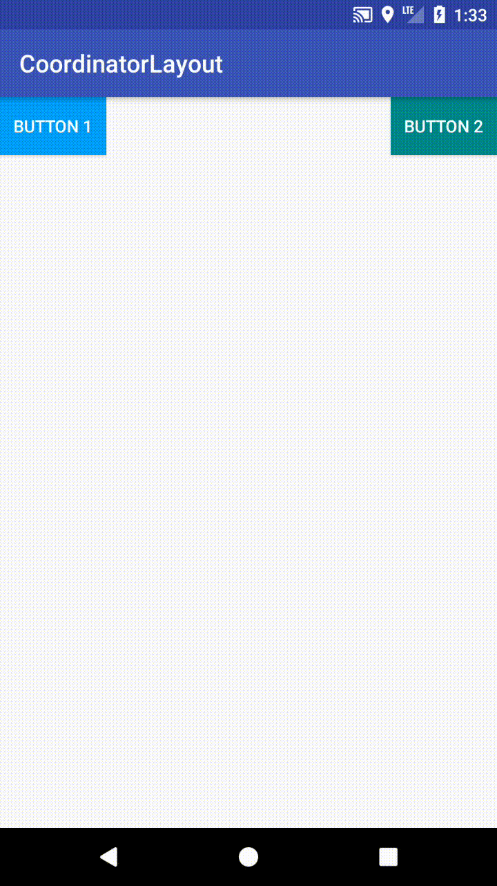
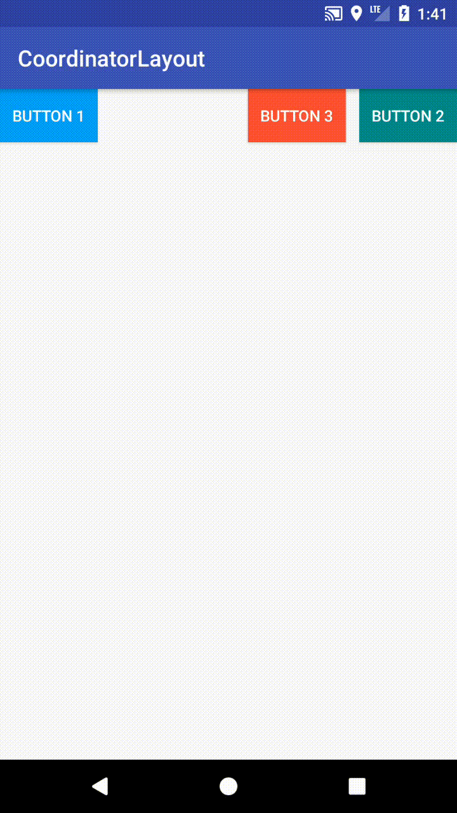

Introduction
CoordinatorLayout，字面上翻譯過來是一個協調者佈局，官方解釋為它是一個超級FrameLayout。
大部分使用場景中都搭配AppbarLayout、CollapsingToolbarLayout、Toolbar來使用，導致在不知不覺中，大家也有可能認為CoordinatorLayout只能跟這幾個佈局一起使用。
其實CoordinatorLayout的功能可不止於此，本文就簡單介紹CoordinatorLayout的強大功能
CoordinatorLayout最主要兩的作用
1.當作根佈局
2.當作主要容器，協調一個或多個子View行為
接下來我們來看看範例：

可以看到上圖佈局中有兩個Button1、Button2，移動Button1，Button2也會跟著移動。
如果不使用CoodinatorLayout來實現，那麼兩個Button就必須相互持有，然後再onTouchEvent裡做判斷，如果需要更多的View根據Button1的移動，做出相應的響應，實現起來除了耦合度很高，要寫出完整的判斷是也相當不容易。
Behaviors
CoordinatorLayout使用核心就是Behaviors，透過Behaviors可以執行你訂製的動作，在Behaviors中，有兩種角色
1.Dependency指的是Behaviors依賴的View，如上圖中的Button1
2.Child指的是要執行Behaviors動作的子View，如上圖的Button2
接下來我們來實作Behavior去繼承CoordinatorLayout.Behavior，泛行參數T也就是我們要執行動作的View類，然後實現兩種方法。
1
2
3
4
5
6
7
8
9
10
11
12
13
| @Override
public boolean layoutDependsOn(CoordinatorLayout parent, T child, View dependency) {
return super.layoutDependsOn(parent, child, dependency);
}
@Override
public boolean onDependentViewChanged(CoordinatorLayout parent, T child, View dependency) {
return super.onDependentViewChanged(parent, child, dependency);
}
|
有了上述的觀念後接下來實作MyBehavior
1
2
3
4
5
6
7
8
9
10
11
12
13
14
15
16
17
18
19
20
21
22
23
24
25
26
27
28
29
| public class MyBehavior extends CoordinatorLayout.Behavior<Button> {
public MyBehavior(Context context, AttributeSet attrs) {
super(context, attrs);
}
@Override
public boolean layoutDependsOn(CoordinatorLayout parent, Button child, View dependency) {
return dependency instanceof CustomButton;
}
@Override
public boolean onDependentViewChanged(CoordinatorLayout parent, Button child, View dependency) {
int top = dependency.getTop();
setPosition(child, top);
return true;
}
private void setPosition(View view, int y) {
CoordinatorLayout.MarginLayoutParams layoutParams = (CoordinatorLayout.MarginLayoutParams)view.getLayoutParams();
layoutParams.topMargin = y;
view.setLayoutParams(layoutParams);
}
}
|
在Layout裡添加自訂義的MyBehavior，Button就會依照**Dependency(CustomButton)**的變化，作出相應的行為
1
2
3
4
5
6
7
8
9
10
11
12
13
14
15
16
17
18
19
20
21
22
23
24
25
26
27
28
29
| <?xml version="1.0" encoding="utf-8"?>
<android.support.design.widget.CoordinatorLayout
xmlns:android="http://schemas.android.com/apk/res/android"
xmlns:app="http://schemas.android.com/apk/res-auto"
xmlns:tools="http://schemas.android.com/tools"
android:layout_width="match_parent"
android:layout_height="match_parent"
tools:context="net.nickchen45.coordinatorlayout.MainActivity">
<android.support.v7.widget.AppCompatButton
android:layout_width="wrap_content"
android:layout_height="wrap_content"
android:text="@string/button_two"
android:background="@color/teal_500"
android:textColor="@android:color/white"
android:layout_marginTop="0dp"
android:layout_gravity="right"
app:layout_behavior="net.nickchen45.coordinatorlayout.MyBehavior"/>
<net.nickchen45.coordinatorlayout.CustomButton
android:layout_width="wrap_content"
android:layout_height="wrap_content"
android:text="@string/button_one"
android:background="@color/light_blue_500"
android:textColor="@android:color/white" />
</android.support.design.widget.CoordinatorLayout>
|
就算增加一個Button3，也是輕而易舉

參考資料：
Android CoordinatorLayout
Android CoordinatorLayout.Behavior